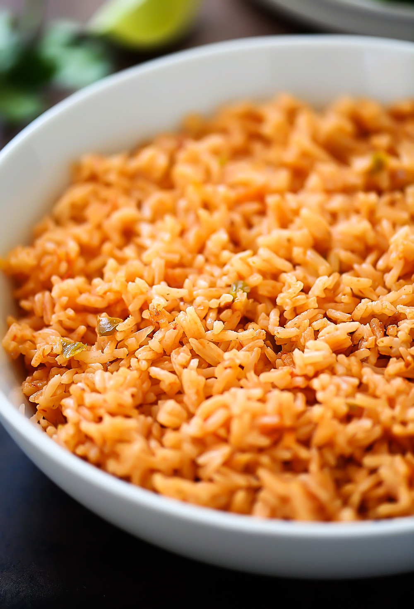

Mexican Red Rice

Mexican Red Rice recipe
This is the Mexican Red Rice plate.
Found throughout the country in households and restaurants, it is a staple of Mexican food.
Ingredients
- Rice
- Water
- Cooking oil
- Tomato
- Onion
- Garlic
- Salt
- Peas
- Corn kernels
- Carrot
- Potato
Steps
- Rinse the rice with cold water.
- Allow the rice to dry.
- Fry the rice at a low fire setting.
- Liquefy the tomato, onion, and garlic.
- Dice the carrots and potatoes.
- Add two cups of water for every cup of rice to the fried rice.
- Add the vegetables and the liquefied sauce along with a teaspoon of salt to the mix.
- Bring to boil and then cook at low fire for 10 minutes.
- Enjoy with innumerable dishes.